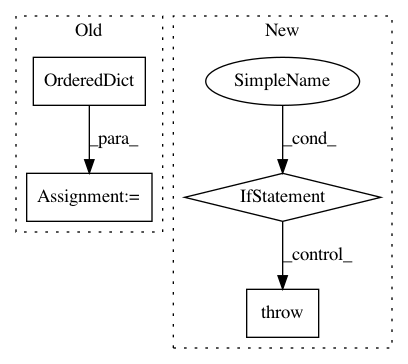

558f030de16f0e3ea4ce860aac0d085faad99441,ilastik/applets/batchProcessing/batchProcessingGui.py,BatchProcessingGui,run_export,#BatchProcessingGui#,153
Before Change
role_names = self.parentApplet.dataSelectionApplet.topLevelOperator.DatasetRoles.value
// Prepare file lists in an OrderedDict
role_path_dict = OrderedDict()
role_path_dict[0] = BatchProcessingGui.get_all_item_strings(self.list_widgets[0])
num_datasets = len(role_path_dict[0])
for role_index, list_widget in enumerate(self.list_widgets[1:], start=1):
After Change
if len(datasets) == 0:
role_path_dict[role_name] = [None] * num_datasets
if len(role_path_dict[role_name]) != num_datasets:
raise BatchProcessingDataConstraintException(f"Number of files for "{role_name}" does not match ")
// Run the export in a separate thread
export_req = Request(partial(self.parentApplet.run_export, role_path_dict))
export_req.notify_failed(self.handle_batch_processing_failure)
export_req.notify_finished(self.handle_batch_processing_finished)
export_req.notify_cancelled(self.handle_batch_processing_cancelled)
In pattern: SUPERPATTERN
Frequency: 3
Non-data size: 4
Instances
Project Name: ilastik/ilastik
Commit Name: 558f030de16f0e3ea4ce860aac0d085faad99441
Time: 2019-08-13
Author: k-dominik@users.noreply.github.com
File Name: ilastik/applets/batchProcessing/batchProcessingGui.py
Class Name: BatchProcessingGui
Method Name: run_export
Project Name: chainer/chainercv
Commit Name: ec70c8f39d759dfe733286a41c2f49bf6258878c
Time: 2017-07-14
Author: yuyuniitani@gmail.com
File Name: chainercv/links/model/sequential_feature_extractor.py
Class Name: SequentialFeatureExtractor
Method Name: __init__
Project Name: IDSIA/sacred
Commit Name: 0cd42478586c9cb1febb6b76eea068aac8869a1e
Time: 2018-01-24
Author: dismaldenizen@gmail.com
File Name: sacred/ingredient.py
Class Name: Ingredient
Method Name: __init__